Nuestro vuelo de regreso a Waterloo nos dejó con una escala en Montreal, la cual pudimos convertir en una escala larga para salir del aeropuerto y conocer la ciudad. Esta fue la primera vez de Sebastián en Montreal, y la segunda de Rachel, habiéndola visitado por una semana a los 10 años.
Compramos boletos para el autobús de enlace (un proceso sorprendentemente confuso) y tomamos el autobús desde el aeropuerto hasta el centro de la ciudad, donde teníamos reservado un recorrido a pie. Caminando desde la parada del autobús hasta el lugar de inicio del recorrido, Rachel recordaba su viaje anterior a Montreal. Una de las partes más memorables fue una panadería china que vendía panes de queso y panes dulces de azúcar. Después de mensajearse con sus padres, se dio cuenta de que el área por la que caminábamos estaba justo cerca de la misma panadería. ¡Así que hicimos un pequeño desvío y la encontramos! Compramos los famosos panes y Rachel pudo probarlos de nuevo después de exactamente una década.
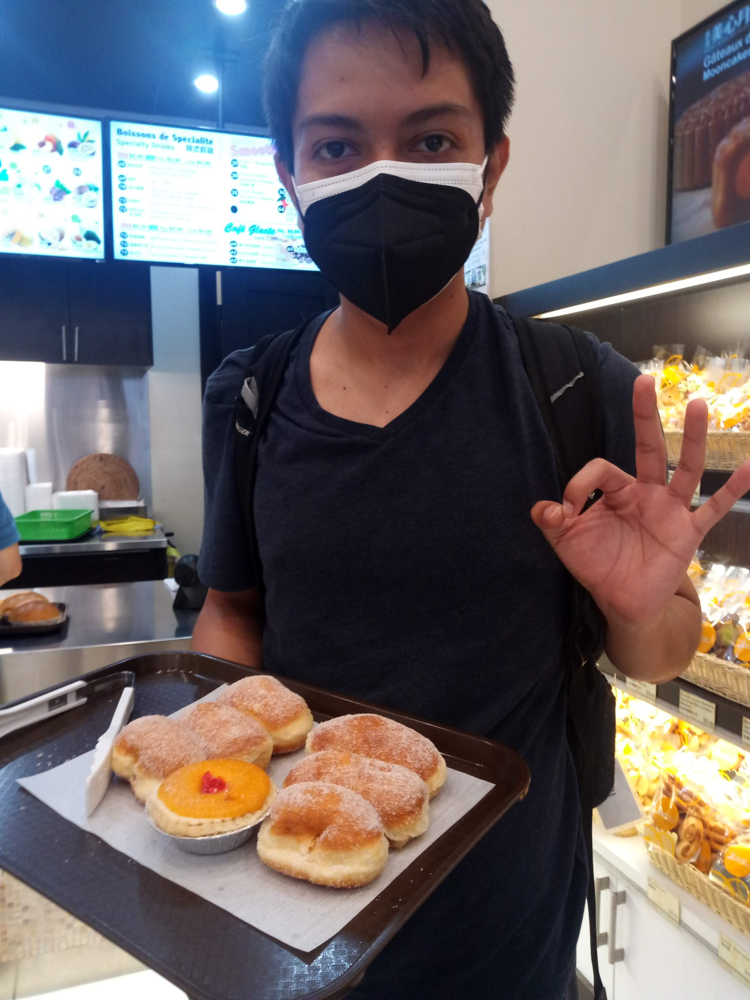
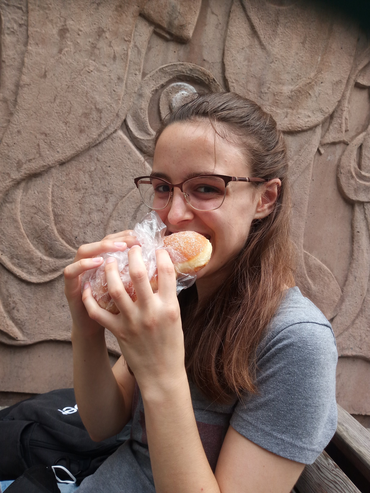

Luego nos reunimos con nuestro guía del recorrido a pie, quien nos llevó por toda la ciudad vieja, compartiendo historia tras historia sobre el pasado de Montreal y los edificios por los que pasábamos. Nuestra conclusión principal fue que básicamente todos los edificios en Montreal:
- solían ser un banco
- se quemaron al menos una vez en los últimos siglos
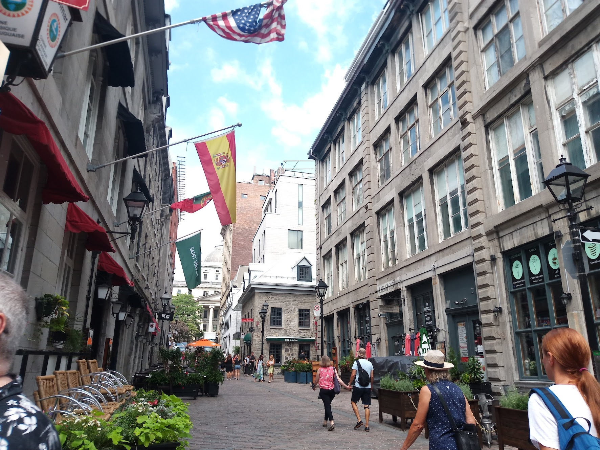
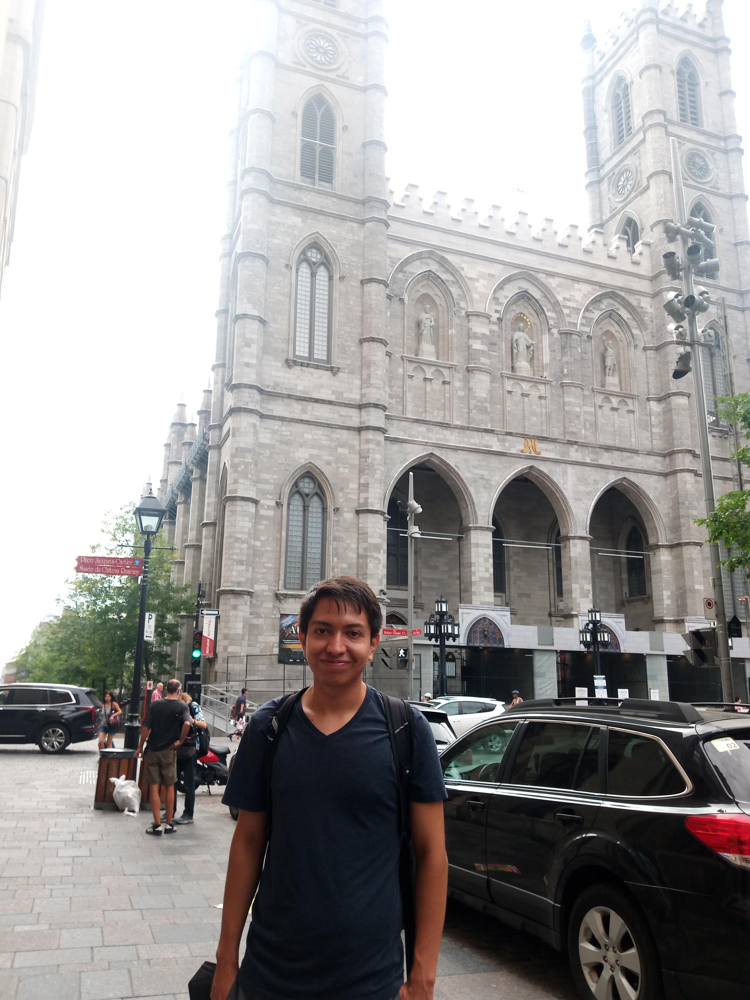
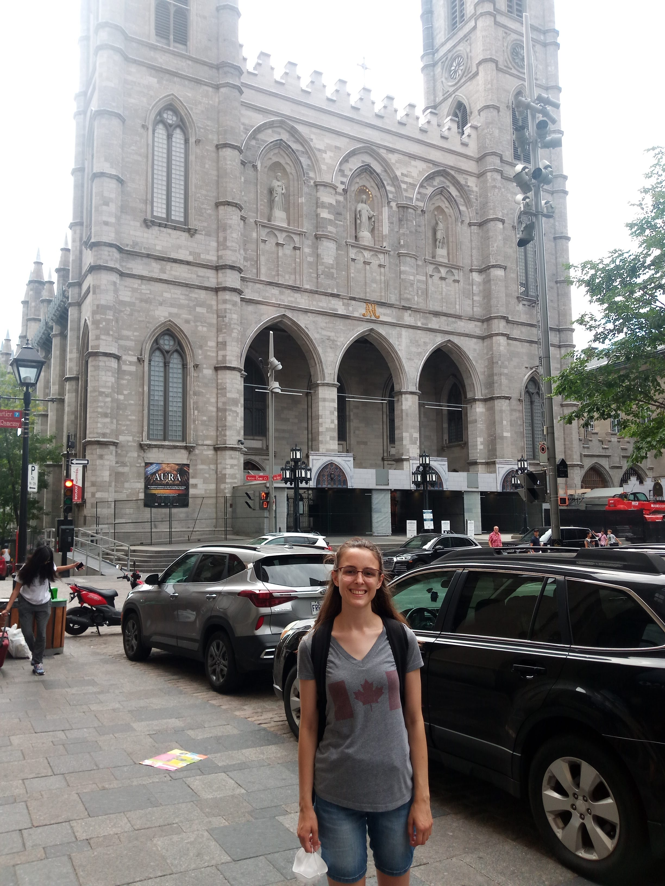
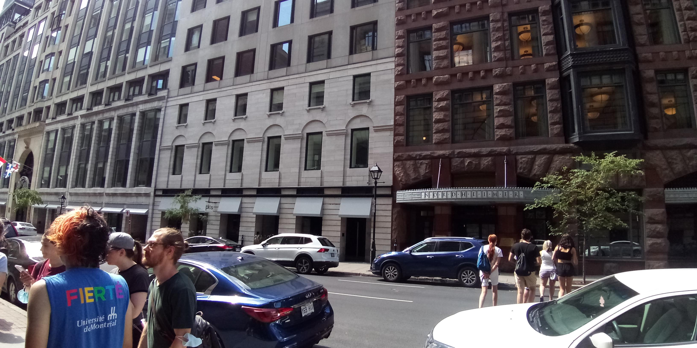
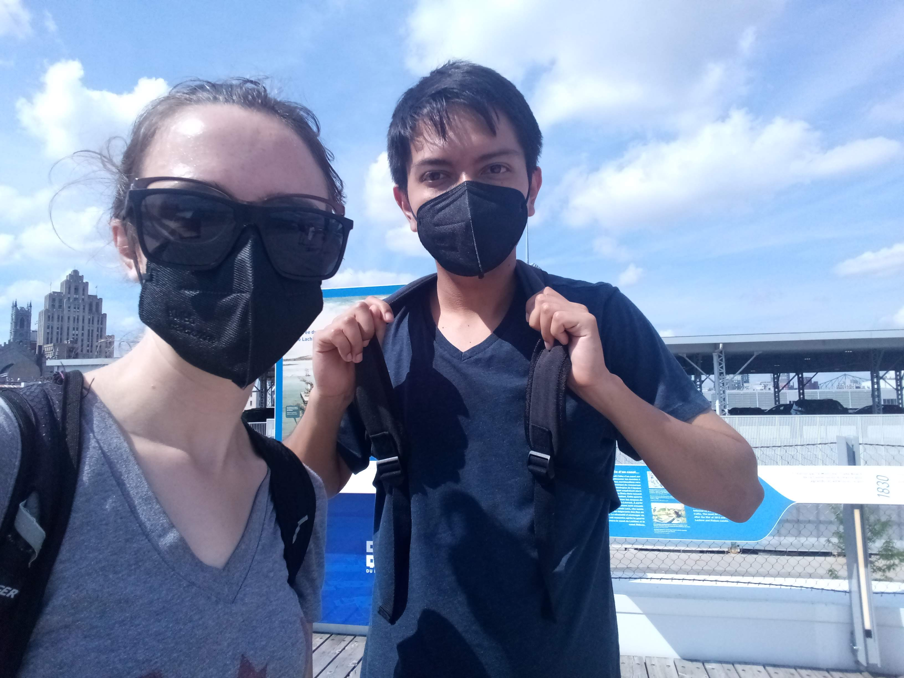
El día estaba abrasadoramente caluroso y, al final del recorrido a pie de tres horas, Sebastián estaba exhausto. Logramos llegar a un restaurante con aire acondicionado donde pudo recuperarse un poco, y comimos poutine (¡por supuesto, es Quebec!) y algo de shawarma (mediocre).
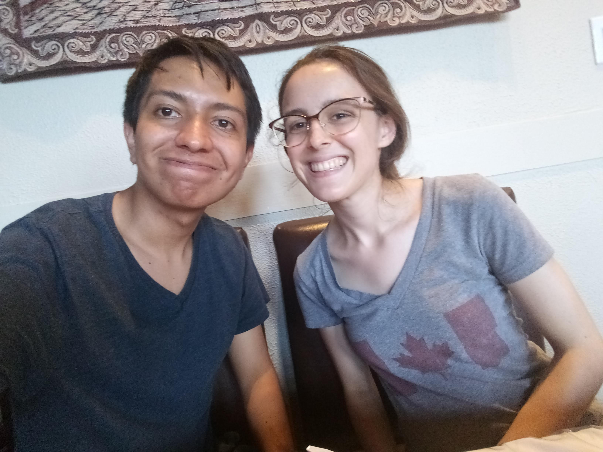
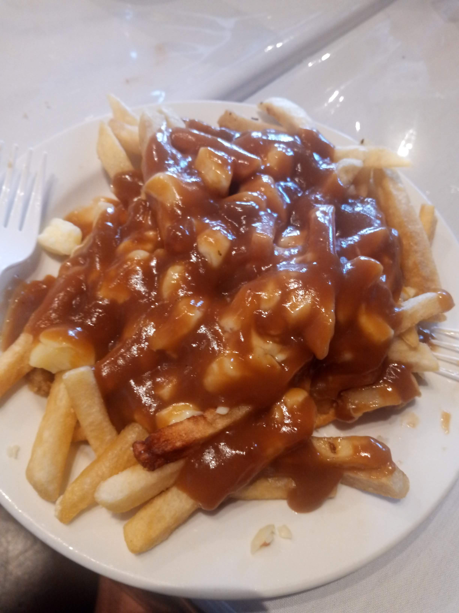
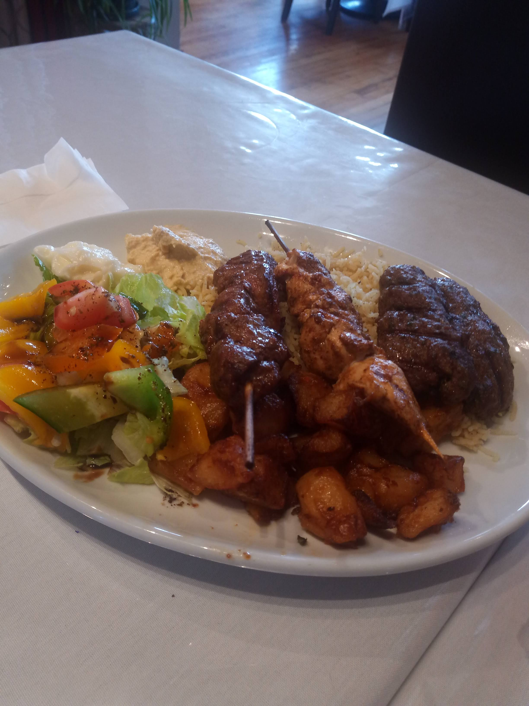
Después de la cena, llegó el momento de regresar al aeropuerto para tomar el vuelo a casa. Ahora era el turno de Rachel de "morir", pero de estrés. Ya estábamos un poco ajustados de tiempo para el vuelo, pero llegamos a la parada del autobús con tiempo suficiente para tomarlo. Pero cuando vamos a subir al autobús, el conductor mira nuestros boletos y nos dice que no podemos subir. Habíamos comprado boletos de ida en lugar del pase diario, lo que significaba que no podíamos usar ese boleto para el regreso al aeropuerto. Intentamos preguntar sobre pagar de otra manera o comprar los boletos en línea, pero el conductor no aceptó. Así que ahora estábamos varados con un vuelo que salía pronto. Sebastián intentó pedir un Uber, pero su teléfono se apagó justo cuando estaba pidiendo, y no estábamos seguros de si se había procesado. La recepción también era terrible en esa zona, pero Rachel corría por la acera intentando conseguir señal para organizar el transporte y estresada por perder el vuelo. El Uber llega a donde Sebastián está esperando, él mira hacia allá, ve a Rachel por la calle y la llama. Ella ve el Uber con gratitud y corre de regreso para subir.
Al final de todo, llegamos al aeropuerto y subimos al avión con tiempo suficiente, y llegamos a casa sanos y salvos.
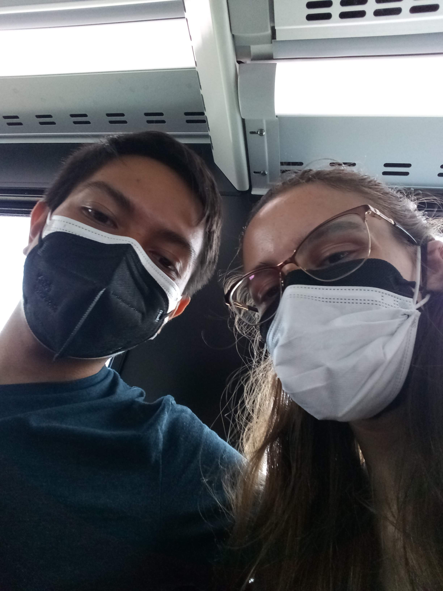
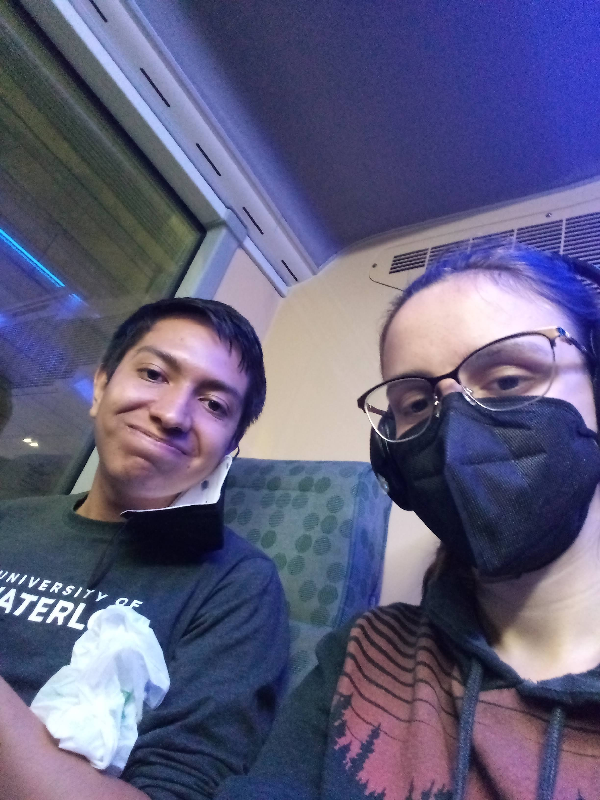